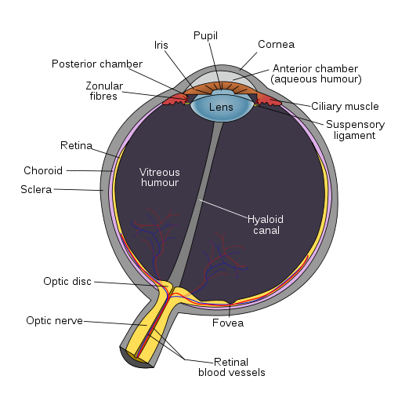

We started from Barcelona, we made a tour on an airplane, but in both situations we saw something.
Prefation
The objective of this project is to represent as accurately as a human eye and its components.
Eyes are organs that detect light and convert it into electro-chemical impulses in neurons.
Before displaying the 3D model, we should show the image to which reference is made to build the model.
Starting from this image, was possible to identify the main elements that make up the human eye. In particular have been identified the following elements:
- Optic nerve
- Retinal blood vessels
- Sclera
- Choroid
- Retina
- Vitreous humor and Hyaloid canal
- Iris
- Lens and suspensor
- Cornea
...and subsequently started modeling NEXT ->